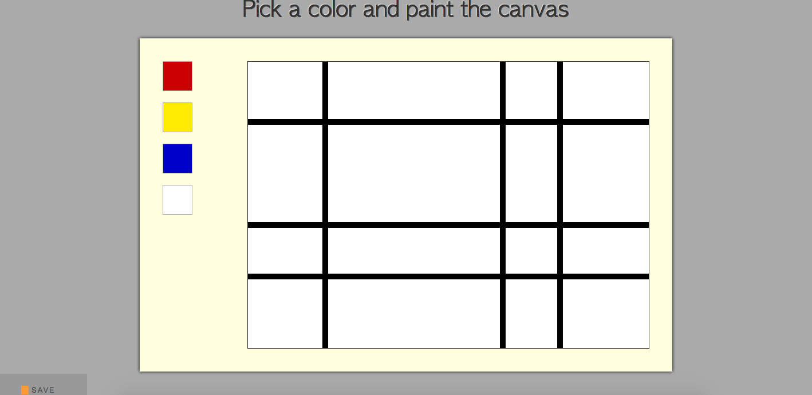

So you want to make a pretty picture using the computer? Well no, if you are reading this that's probably the least of what you want to do. There are plenty of programs out there that can allow you to do that, so that can't be your goal for reading this article. Maybe you want to write a computer program that will allow you to practice multiple skills and produce something that you can both enjoy yourself and show off? Well, now we are getting somewhere.
To begin with this program will be run over the web using a local server. In other words this program will create a web-page to display the content we create. This web page will be the basic blank canvas that we will paint, a few different colors to select from, and a save button. Also present but unseen on this page will be two different links, one which imports style and another functionality. Because we wish to save our priceless masterpieces we will also need a data file, but if we neglect to create one the program will do it for us, as a function of the save process. It will only create the data file the first time, and subsequently data will simply be added to it.
One of the reasons that this projects is a good learning experience for beginners it the number of languages it integrates together in the course of making everything work. The displayed portion of the page is written in HTML, the styling is done through CSS, the engine is written in Javascript, and the local server is run through Ruby.
The server may be the most unfamiliar part of this project to many, both in concept and in the tools it uses. To get Ruby to do this for us we are going to be using a Domain Specific Language named Sinatra. If you don't have Sinatra installed on your machine go and download it now. Sinatra allows ruby to display multiple HTML scripts as web-pages at the same time and pass information between pages all while retaining the basic functionality of ruby. It's a good thing. For our Mondrian painting project the Ruby/Sinatra combo will only be used as a way to save our paintings. Bellow is how your ruby page is going to look.
Lets start at the top. There are two requires, one for Sinatra and one for CSV, which is the language we are going to use to store our save data. (If you are unfamiliar with require, please acquaint yourself with it Everything else on this page is a single web process called POST. POST allows you to manipulate and move data without creating a web-page for it, so it is perfect for our purposes. POST also is more secure than the other main Sinatra operation, but that does not matter to us so much. The process begins with post, than a portion of a web address. All Sinatra websites are hosted on localhost:4567,so this page will be hosted at localhost:4567/moving. A do loop is then called, than inside a do loop the operations of the page can occur. Params is a hash containing all the data that this page has received during its current iteration. So to extract the data we call .values on it(You will see during the Javascript why we only need the values), then take the resulting data and pass it into a CSV file called data.csv using another do loop and <<, which is called piping. .open can be told how to interact with the file it opens, in this case the "a" right after the filename tells it to append the document, in other words to add the newly introduced data onto the end of data already present in the file, rather than erasing the preexisting data. That is about the whole of the ruby in this program
Most of the operating parts of this project are powered by Javascript, so hopefully you have used the language and are at least somewhat familiar with it. The Javascript looks like this:
Quite a lot going on there! Once again we start at the top. Everything in this page of code is wrapped in an event listener, and the bulk of the code is chained functions. In fact the only non-function part of this code is the portion at the bottom calling three of the functions. Good stuff. Most of the functions are explained within the code, so before explaining how the code works I am going to go over some of the methods you may be unfamiliar with.
So now that the more obscure methods are out of the way lets run down how this program works.
There is not much truly confusing about the HTML and CSS of this page. There are id tags and class tags, which if you do not understand can be learned about here. Floats were personally dificult for me to understand, but when it was explained to me that they remove the height property of thier parrent element, thus making every sibling element slide toward them, everything became much more clear. To unmake this heightless state another element is given a property of clear. Don't feel bad if this doesn't make a whole lot of sense, or seems like a silly way to do spacing. It is. Other that that everything should be pretty straight forward, and you are now at the point where if you want you can copy and paste everything I have given you and have a funtioning program. I would suggust attempting to write the JavaScript yourself, however, as this will allow you to not only learn these techniques more fully, but to also get more of a feeling of acomplishment, which is important in programing. Good luck, have fun!